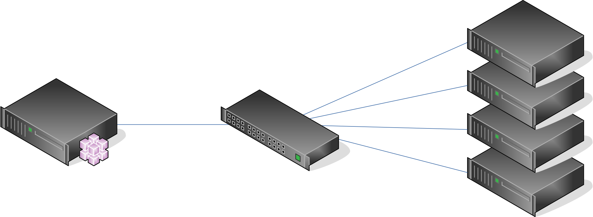

Vocabulary¶
Some words are important in BlueBanquise.
Ansible vocabulary¶
Host¶
An Ansible host is a remote host managed by Ansible. An host can be a physical server, but also a VM or something else.
Host are defined in /etc/ansible/inventory/cluster/nodes.
Group¶
An Ansible group is a logical aggregation of hosts. For example, system administrator can define a group “data_base_servers” that would contains hosts “database1” and “database2”.
Groups allow Ansible to provide dedicated variables to related hosts or execute tasks on a set of hosts.
Note: an host can be part of multiple groups.
Variable¶
Variables in Ansible follow the YAML structure.
A variable is like in any programming language: an variable name, and a data related.
Multiple kind of variables exist in YAML:
Simple¶
A simple variable is defined this way:
my_variable_1: hello!
my_variable_2: 7777
In Jinja2, variable will be accessible directly this way:
{{my_variable_1}}
Output will be:
hello!
List¶
A list is like an array, and can be iterated over:
my_names_list:
- bob
- alice
- henry
In Jinja2, variable can be iterated over, or a specific value can be used:
{% for i in my_names_list %}
{{i}}
{% endfor %}
{{my_names_list[0]}}
Note that index start at 0.
Output will be:
bob
alice
henry
bob
Note also that to check if a list is empty, it is possible to check the list itself:
{% if my_names_list %}
the list is not empty
{% else %}
the list is empty %}
{% endif %}
Dictionarry¶
A dictionarry is simply a pack of other variables, defined under it (some kind of variables tree):
my_dictionarry_1:
my_variable_1: hello!
my_variable_2: 7777
my_names_list:
- bob
- alice
- henry
In Jinja2, dictionarry can be access two ways:
{% for i in my_dictionarry_1.my_names_list %}
{{i}}
{% endfor %}
{% for i in my_dictionarry_1['my_names_list'] %}
{{i}}
{% endfor %}
{{my_dictionarry_1.my_names_list[0]}}
Output will be:
bob
alice
henry
bob
alice
henry
bob
Jinja2 will be discussed later, do not worry about this point for now.
Inventory, roles, and playbooks¶
Inventory¶
The Ansible inventory is the directory that contains Ansible variables and hosts definitions. In BlueBanquise, default path is /etc/ansible/inventory.
Inventory is the data.
Roles¶
An Ansible role is a list of task to do to achieve a purpose. For example, there will be a role called dhcp_server, that contains task to install, configure and start the dhcp server.
In BlueBanquise, default path is /etc/ansible/roles.
Roles are the automation logic.
Playbooks¶
An Ansible playbook is simply a list of roles to apply, on a specific host or group of hosts. It is a yml file.
In BlueBanquise, default path is /etc/ansible/playbooks.
Playbooks are simply your list of roles to apply on your hosts.
Variables precedence¶
We are reaching the very important part of the stack.
Ansible has an internal mechanism called Variables precedence.
When a variable is defined in a yml file, the position of the file in the ansible inventory is critical and very important.
For example, a variable defined in /etc/ansible/inventory/group_vars/all/ will have the less precedence, and a variable defined in /etc/ansible/inventory/cluster will have an higher precedence, and so win if loaded.
The full list of available variables precedence is provided in Ansible documentation: https://docs.ansible.com/ansible/latest/user_guide/playbooks_variables.html#variable-precedence-where-should-i-put-a-variable
This feature is key to the stack and key for system administrator to manipulate the BlueBanquise stack they way he/she wants.
For example, values can be set by default, and then redefined for some groups of hosts without changing the default for all others. Or it is simply possible to fix a dynamic variable to the desired value in hosts definitions if dynamic value is not the one expected. Etc.
Inventory can be seen as a giant pizza, in 3D then flatten.
- Paste is the variable in /etc/ansible/inventory/group_vars/all
- Then large ingredients comes from /etc/ansible/inventory/group_vars/equipment_myequipment
- Then small ingredients above are the /etc/ansible/inventory/cluster/nodes/
- And pepper and tomatoes (last layer) is the extra-vars at call.

Merge¶
Ansible default hash_behaviour is replace. BlueBanquise is using merge.
When using replace, when a dictionarry is impacted by the variables precedence mechanism, Ansible overwrite the full dictionarry if a variable has an higher precedence somewhere.
When using replace, Ansible will only update the related variable, and keep the original dictionarry and values for all other variables in this doctionarry.
Jinja2¶
Jinja2 is the templating language used by Ansible to render templates in roles. It is heavily used in the stack, and learing Jinja2 will often be needed to create custom roles. (But Jinja2 is very simple).
Full documentation is available in a single page: https://jinja.palletsprojects.com/en/2.10.x/templates/
Stack vocabulary¶
Icebergs¶
Icebergs are logical (and often physical) isolation of ethernet management networks. Most of the time, icebergs are use to:
- Spread load over multiple managements servers (for very large clusters). Icebergs are also often called “islands” in these cases.
- Secure cluster by dividing specific usages, to prevent compromised system to access all the network.
One Iceberg is composed of one or multiple managements servers, in charge of the same pool of nodes.
BlueBanquise support many kind of configurations, but most common are:
One iceberg¶

For simple systems (small/medium HPC cluster, small enterprise network, university IT practical session room, etc), one iceberg scenario is the standard. One or multiple management will reach the sames ethernet administration networks, and federate the same pool of nodes.

Multiple icebergs¶

For advanced systems, (large HPC clusters needing load spreading with unified network, entreprise network, etc), multiple incebergs can be required. BlueBanquise allows multiple levels of icebergs, for complex needs. Also, a global_network can be defined so all nodes from all icebergs can communicate through this unified network (most of the time an Interconnect network).

Equipment profiles¶
In BlueBanquise, nodes are nearly always part of a group starting with prefix equipment_. These groups are called equipment profiles.
They are used to provide hosts of this group the equipment_profile dictionarry, and other variables if nedeed. This doctionarry defines hosts operating system parameters, kernel parameters, partitionning, etc.
These are key groups of the stack.
It is important to note that equipment_profiles dictionarry cannot be used at an upper level than group_vars. It can, but you must NOT.